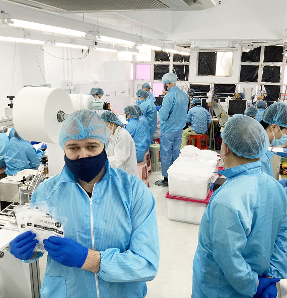

<section class="info" id="info">
  <div class="wrapper">
    <div class="info__container">
      <div class="info__right">
        
        <p class="info__text absolut blue">
          Given the praised reputation and reliable quality within the industry,
          we have also established preliminary business agreements with some
          hospitals, local governments and medical institutions in Guangdong
          Province.
        </p>
      </div>
      <div class="info__left">
        <div class="info__left-top">
          <p class="info__text">
            After years of development, Health Pro has reached stable long-term
            cooperation with many hospitals and medical institutions in Hong Kong.
          </p>
          <p class="info__text blue">
            We are keenly looking forward to expand our market in Mainland China
            and overseas in the future, as we have strong beliefs in our products.
          </p>
        </div>
        <div class="info__left-bottom">
          <h5 class="info__title title-5">Proudly Made in Hong Kong</h5>
          <p>
            Our factory is located in Hong Kong.
            Equipped with machines and assembly line of the best quality on the
            market to ensure quality control.
          </p>
          <div class="info__left-container">
            <a class="yellowBlue-button" href="#">Learn more</a>
            <div class="info__left-communication">
              
              <a href="tel:+1 123 456 7890">
                <p class="info__communication">Contact us</p>
                <p class="info__communication-number">+1 123 456 7890</p>
              </a>
            </div>
          </div>
        </div>
      </div>
    </div>
  </div>
</section>